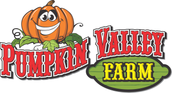
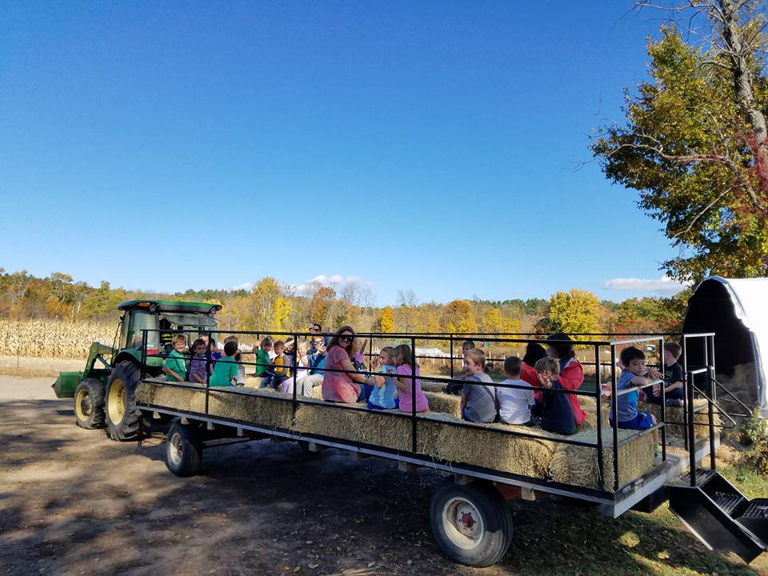
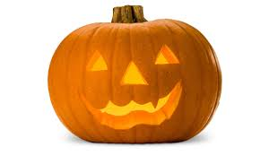
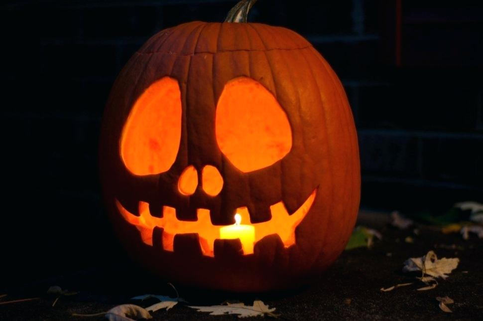
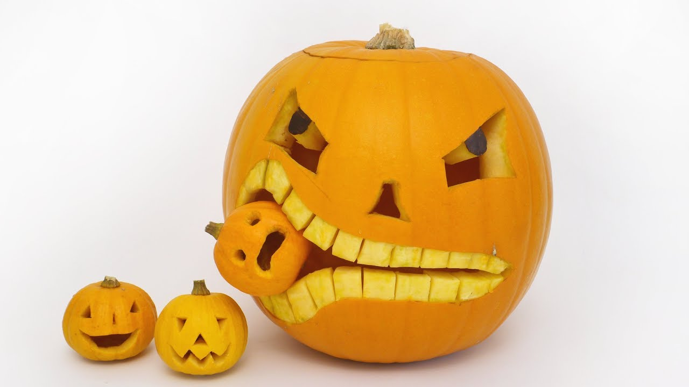
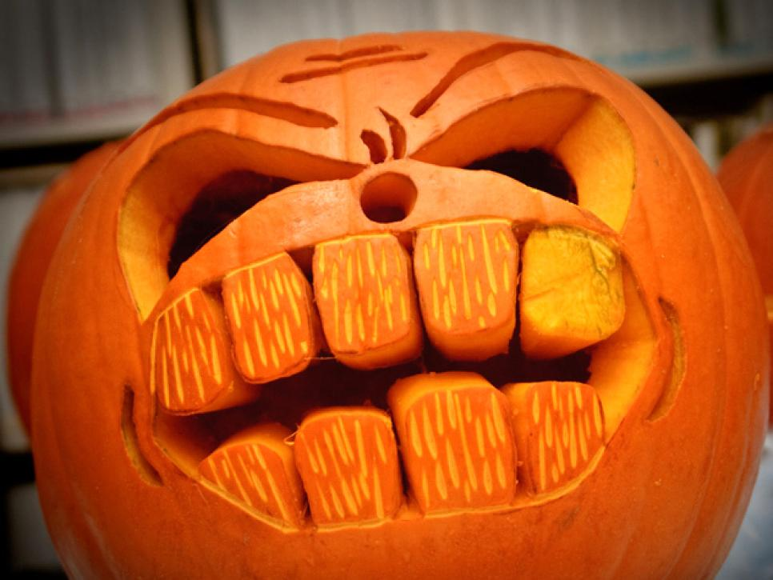
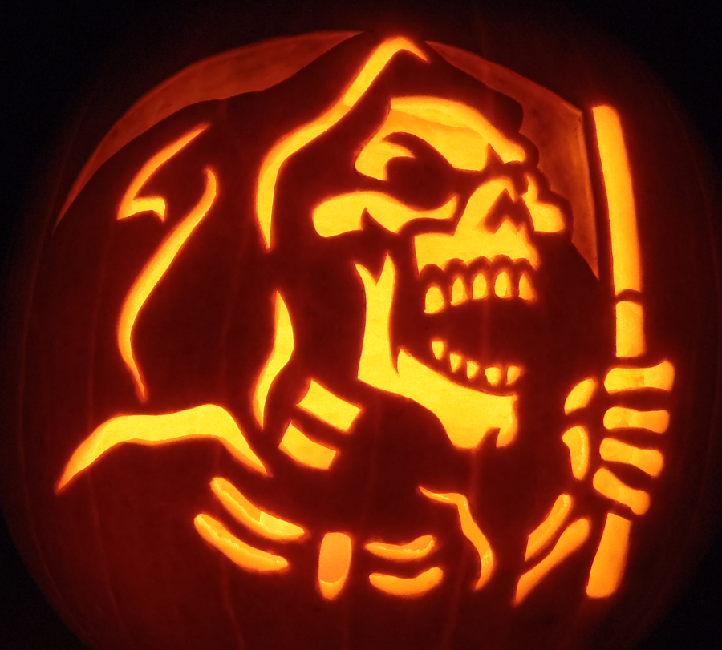
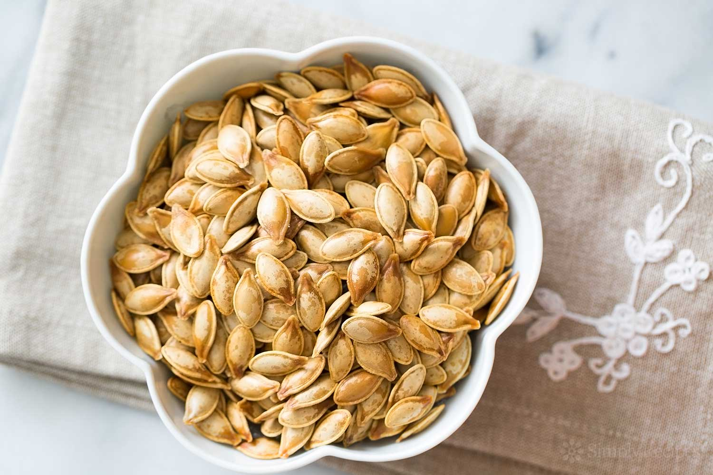

Pumpkin Valley Farm offers hay rides to pumpkin patches where your family can chose their own pumkpins for carving.
 Pumkin carving is fun for all ages because designs and patterns can be simple or intricate. Pumpkin carving kits can be bought from local retailers such as Walmart and Target.
    There are free templates to take advantage of. Below is one of many links with free templates.
Free Pumpkin Carving TemplatesAfter carving your pumpkin keep the seeds. Pop the seeds into the over after adding oil and salt. Pumpking seeds make for a delicious snack!
